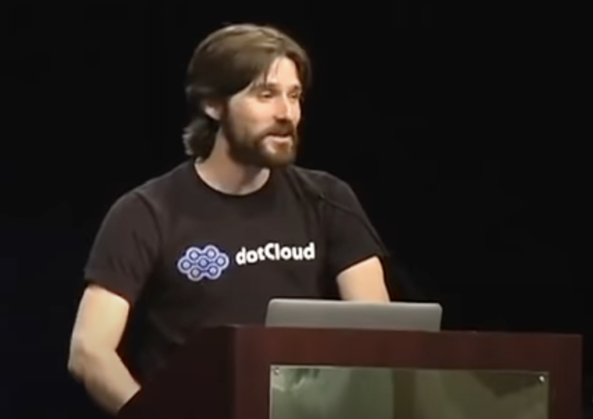
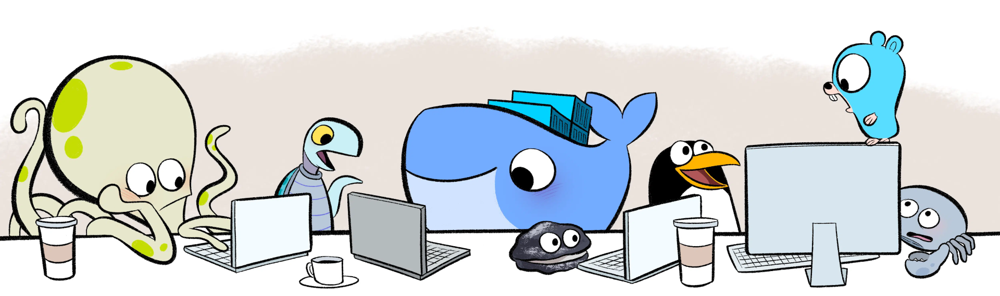
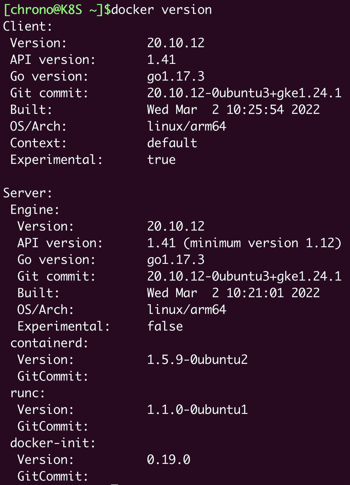
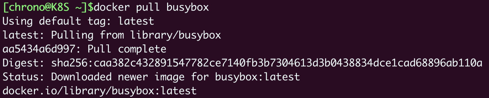
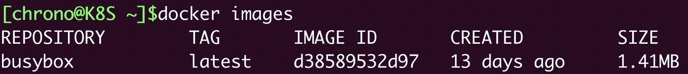
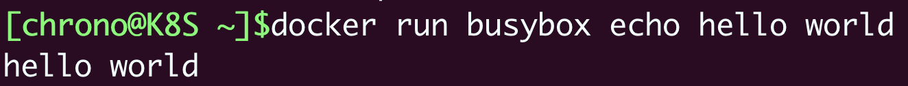
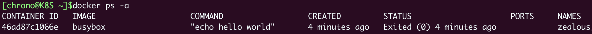
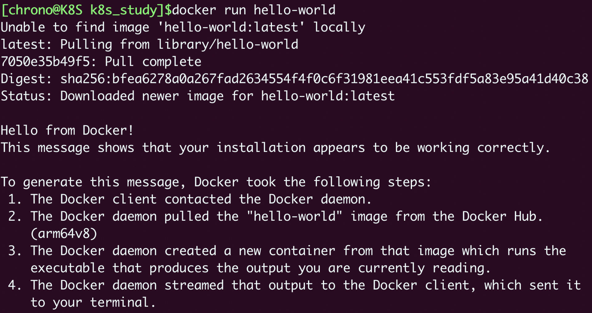
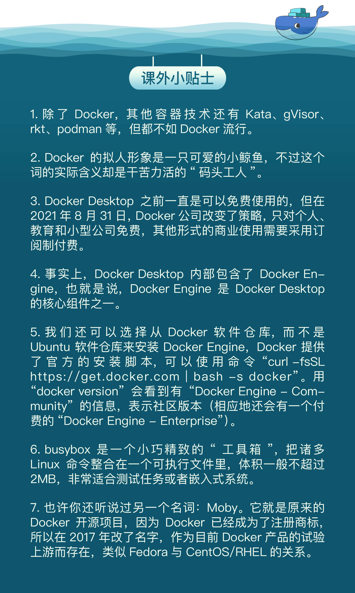

- 00 开篇词 迎难而上，做云原生时代的弄潮儿.md.html
- 00 课前准备 动手实践才是最好的学习方式.md.html
- 01 初识容器：万事开头难.md.html
- 02 被隔离的进程：一起来看看容器的本质.md.html
- 03 容器化的应用：会了这些你就是Docker高手.md.html
- 04 创建容器镜像：如何编写正确、高效的Dockerfile.md.html
- 05 镜像仓库：该怎样用好Docker Hub这个宝藏.md.html
- 06 打破次元壁：容器该如何与外界互联互通.md.html
- 07 实战演练：玩转Docker.md.html
- 08 视频：入门篇实操总结.md.html
- 09 走近云原生：如何在本机搭建小巧完备的Kubernetes环境.md.html
- 10 自动化的运维管理：探究Kubernetes工作机制的奥秘.md.html
- 11 YAML：Kubernetes世界里的通用语.md.html
- 12 Pod：如何理解这个Kubernetes里最核心的概念？.md.html
- 13 Job_CronJob：为什么不直接用Pod来处理业务？.md.html
- 14 ConfigMap_Secret：怎样配置、定制我的应用.md.html
- 15 实战演练：玩转Kubernetes（1）.md.html
- 16 视频：初级篇实操总结.md.html
- 17 更真实的云原生：实际搭建多节点的Kubernetes集群.md.html
- 18 Deployment：让应用永不宕机.md.html
- 19 Daemonset：忠实可靠的看门狗.md.html
- 20 Service：微服务架构的应对之道.md.html
- 21 Ingress：集群进出流量的总管.md.html
- 22 实战演练：玩转Kubernetes（2）.md.html
- 23 视频：中级篇实操总结.md.html
- 24 PersistentVolume：怎么解决数据持久化的难题？.md.html
- 25 PersistentVolume + NFS：怎么使用网络共享存储？.md.html
- 26 StatefulSet：怎么管理有状态的应用？.md.html
- 27 滚动更新：如何做到平滑的应用升级降级？.md.html
- 28 应用保障：如何让Pod运行得更健康？.md.html
- 29 集群管理：如何用名字空间分隔系统资源？.md.html
- 30 系统监控：如何使用Metrics Server和Prometheus？.md.html
- 31 网络通信：CNI是怎么回事？又是怎么工作的？.md.html
- 32 实战演练：玩转Kubernetes（3）.md.html
- 33 视频：高级篇实操总结.md.html
- 加餐 docker-compose：单机环境下的容器编排工具.md.html
- 加餐 谈谈Kong Ingress Controller.md.html
- 结束语 是终点，更是起点.md.html
- 捐赠
01 初识容器：万事开头难
你好，我是Chrono。
在课前准备里，我们使用VirtualBox/VMWare搭建了Linux虚拟机环境，有了这个基础，今天我们就开始正式的学习。
俗话说：“万事开头难”，对于Kubernetes这个庞大而陌生的领域来说更是如此，如何迈出学习的第一步非常关键，所以，今天我们先从最简单、最基本的知识入手，聊聊最流行的容器技术Docker，先搭建实验环境，再动手操作一下，进而破除它的神秘感。
Docker的诞生
现在我们都已经对Container、Kubernetes这些技术名词耳熟能详了，但你知道这一切的开端——Docker，第一次在世界上的亮相是什么样子的吗？
九年前，也就是2013年3月15日，在北美的圣克拉拉市召开了一场Python开发者社区的主题会议PyCon，研究和探讨各种Python开发技术和应用，与我们常说的“云”“PaaS”“SaaS”根本毫不相关。
在当天的会议日程快结束时，有一个“闪电演讲”（lighting talk）的小环节。其中有一位开发者，用了5分钟的时间，做了题为 “The future of Linux Containers” 的演讲，不过临近末尾因为超时而被主持人赶下了台，场面略显尴尬（你可以在这里回看这段具有历史意义的视频）。

相信你一定猜到了，这个只有短短5分钟的技术演示，就是我们目前所看到的、席卷整个业界的云原生大潮的开端。正是在这段演讲里，Solomon Hykes（dotCloud公司，也就是Docker公司的创始人）首次向全世界展示了Docker技术。
5分钟的时间非常短，但演讲里却包含了几个现在已经普及，但当时却非常新奇的概念，比如容器、镜像、隔离运行进程等，信息量非常大。
PyCon2013大会之后，许多人都意识到了容器的价值和重要性，发现它能够解决困扰了云厂商多年的打包、部署、管理、运维等问题，Docker也就迅速流行起来，成为了GitHub上的明星项目。然后在几个月的时间里，Docker更是吸引了Amazon、Google、Red Hat等大公司的关注，这些公司利用自身的技术背景，纷纷在容器概念上大做文章，最终成就了我们今天所看到的至尊王者Kubernetes的出现。
Docker的形态
好了，下面我们就要来一个“情境再现”，在我们的Linux虚拟机上搭建一个容器运行环境，模拟一下当年Solomon Hykes初次展示Docker的场景。
当然，如今的Docker经过了九年的发展，已经远不是当初的“吴下阿蒙”了，不过最核心的那些概念和操作还是保持了一贯性，没有太大的变化。
首先，我们需要对Docker的形态有所了解。目前使用Docker基本上有两个选择：Docker Desktop和Docker Engine。

Docker Desktop是专门针对个人使用而设计的，支持Mac和Windows快速安装，具有直观的图形界面，还集成了许多周边工具，方便易用。
不过，我个人不是太推荐使用Docker Desktop，原因有两个。第一个，它是商业产品，难免会带有Docker公司的“私人气息”，有一些自己的、非通用的东西，不利于我们后续的Kubernetes学习。第二个，它只是对个人学习免费，受条款限制不能商用，我们在日常工作中难免会“踩到雷区”。
Docker Engine则和Docker Desktop正好相反，完全免费，但只能在Linux上运行，只能使用命令行操作，缺乏辅助工具，需要我们自己动手DIY运行环境。不过要是较起真来，它才是Docker当初的真正形态，“血脉”最纯正，也是现在各个公司在生产环境中实际使用的Docker产品，毕竟机房里99%的服务器跑的都是Linux。
所以，在接下来的学习过程里，我推荐使用Docker Engine，之后在本专栏内，如果没有什么特别的声明，Docker这个词通常指的就是Docker Engine。
Docker的安装
在课前准备里，我们已经在Linux虚拟机里安装了一些常用软件，用的是Ubuntu的包管理工具apt，所以，我们仍然可以使用同样的方式来安装Docker。
先让我们尝试输入命令 docker ，会得到“命令未找到”的提示，还有如何安装的建议：
Command 'docker' not found, but can be installed with:
sudo apt install docker.io
所以，你只需要按照系统的提示，“照葫芦画瓢”输入命令，安装 docker.io 就可以了。为了方便，你还可以使用 -y 参数来避免确认，实现自动化操作：
sudo apt install -y docker.io #安装Docker Engine
刚才说过，Docker Engine不像Docker Desktop那样可以安装后就直接使用，必须要做一些手工调整才能用起来，所以你还要在安装完毕后执行下面的两条命令：
sudo service docker start #启动docker服务
sudo usermod -aG docker ${USER} #当前用户加入docker组
第一个 service docker start 是启动Docker的后台服务，第二个 usermod -aG 是把当前的用户加入Docker的用户组。这是因为操作Docker必须要有root权限，而直接使用root用户不够安全，加入Docker用户组是一个比较好的选择，这也是Docker官方推荐的做法。当然，如果只是为了图省事，你也可以直接切换到root用户来操作Docker。
上面的三条命令执行完之后，我们还需要退出系统（命令 exit ），再重新登录一次，这样才能让修改用户组的命令 usermod 生效。
现在我们就可以来验证Docker是否安装成功了，使用的命令是 docker version 和 docker info。
docker version 会输出Docker客户端和服务器各自的版本信息：

下面是我从中摘出的比较关键的版本号和系统信息。可以看到，我使用的是Docker Engine 20.10.12，系统是Linux，硬件架构是arm64，也就是Apple M1：
Client:
Version: 20.10.12
OS/Arch: linux/arm64
Server:
Engine:
Version: 20.10.12
OS/Arch: linux/arm64
docker info 会显示当前Docker系统相关的信息，例如CPU、内存、容器数量、镜像数量、容器运行时、存储文件系统等等，这里我也摘录了一部分：
Server:
Containers: 1
Running: 0
Paused: 0
Stopped: 1
Images: 8
Server Version: 20.10.12
Storage Driver: overlay2
Backing Filesystem: extfs
Cgroup Driver: systemd
Default Runtime: runc
Kernel Version: 5.13.0-19-generic
Operating System: Ubuntu Jammy Jellyfish (development branch)
OSType: linux
Architecture: aarch64
CPUs: 2
Total Memory: 3.822GiB
Docker Root Dir: /var/lib/docker
docker info 显示的这些信息，对于我们了解Docker的内部运行状态非常有用，比如在这里，你就能够看到当前有一个容器处于停止状态，有8个镜像，存储用的文件系统是overlay2，Linux内核是5.13，操作系统是Ubuntu 22.04 Jammy Jellyfish，硬件是aarch64，两个CPU，内存4G。
Docker的使用
现在，我们已经有了可用的Docker运行环境，就可以来重现9年前Solomon Hykes的那场简短的技术演示了。
首先，我们使用命令 docker ps，它会列出当前系统里运行的容器，就像我们在Linux系统里使用 ps 命令列出运行的进程一样。
注意，所有的Docker操作都是这种形式：以 docker 开始，然后是一个具体的子命令，之前的 docker version 和 docker info 也遵循了这样的规则。你还可以用 help 或者 --help 来获取帮助信息，查看命令清单和更详细的说明。
因为我们刚刚安装好Docker环境，这个时候还没有运行任何容器，所以列表显然是空的。
接下来，让我们尝试另一个非常重要的命令 docker pull ，从外部的镜像仓库（Registry）拉取一个busybox镜像（image），你可以把它类比成是Ubuntu里的“apt install”下载软件包：
docker pull busybox #拉取busybox镜像

docker pull 会有一些看起来比较奇怪的输出信息，现在我们暂时不用管，后续的课程会有详细解释。
我们再执行命令 docker images ，它会列出当前Docker所存储的所有镜像：

可以看到，命令会显示有一个叫busybox的镜像，镜像的ID号是一串16进制数字，大小是1.41MB。
现在，我们就要从这个镜像启动容器了，命令是 docker run ，执行 echo 输出字符串，这也正是Solomon Hykes在大会上所展示的最精彩的那部分：
docker run busybox echo hello world
这条命令会在我们的终端上，输出计算机世界最著名的语句“hello world”：

然后我们再用 docker ps 命令，加上一个参数 -a ，就可以看到这个已经运行完毕的容器：

以上的这些，基本上就是Solomon Hykes闪电演讲的全部内容了。
初次接触容器的你可能会感到很困惑，这些命令都做了什么？看起来并没有展示出什么特别神奇的本领啊？可能还不如直接写一个Shell脚本来得省事。
有同样感想的不止你一个，也许PyCon2013当时绝大部分的现场观众也都有这样的疑问。不要着急，我们在后续的课程再逐步讲解这其中的奥妙。
Docker的架构
这里我再稍微讲一下Docker Engine的架构，让你有个初步的印象，也为之后的学习做一个铺垫。
下面的这张图来自Docker官网（https://docs.docker.com/get-started/overview/），精准地描述了Docker Engine的内部角色和工作流程，对我们的学习研究非常有指导意义。

刚才我们敲的命令行 docker 实际上是一个客户端client ，它会与Docker Engine里的后台服务Docker daemon通信，而镜像则存储在远端的仓库Registry里，客户端并不能直接访问镜像仓库。
Docker client可以通过 build、pull、run等命令向Docker daemon发送请求，而Docker daemon则是容器和镜像的“大管家”，负责从远端拉取镜像、在本地存储镜像，还有从镜像生成容器、管理容器等所有功能。
所以，在Docker Engine里，真正干活的其实是默默运行在后台的Docker daemon，而我们实际操作的命令行工具“docker”只是个“传声筒”的角色。
Docker官方还提供一个“hello-world”示例，可以为你展示Docker client到Docker daemon再到Registry的详细工作流程，你只需要执行这样一个命令：
docker run hello-world
它会先检查本地镜像，如果没有就从远程仓库拉取，再运行容器，最后输出运行信息：

小结
好了，今天我们初步了解了容器技术，再简单小结一下主要的内容：
- 容器技术起源于Docker，它目前有两个产品：Docker Desktop和Docker Engine，我们的课程里推荐使用免费的Docker Engine，它可以在Ubuntu系统里直接用apt命令安装。
- Docker Engine需要使用命令行操作，主命令是
docker，后面再接各种子命令。 - 查看Docker的基本信息的命令是
docker version和docker info，其他常用的命令有docker ps、docker pull、docker images、docker run。 - Docker Engine是典型的客户端/服务器（C/S）架构，命令行工具Docker直接面对用户，后面的Docker daemon和Registry协作完成各种功能。
课下作业
最后是课下作业时间，给你留两个思考题：
- 学完了这节课，你对容器技术和Docker有什么样的认识和感受？
- Docker Engine为什么要设计成客户端/服务器（C/S）架构？它有什么样的好处？
欢迎在留言区发言参与讨论，如果觉得有收获，也欢迎你转发给身边的朋友一起学习。我们下节课见。

© 2019 - 2023 Liangliang Lee. Powered by gin and hexo-theme-book.